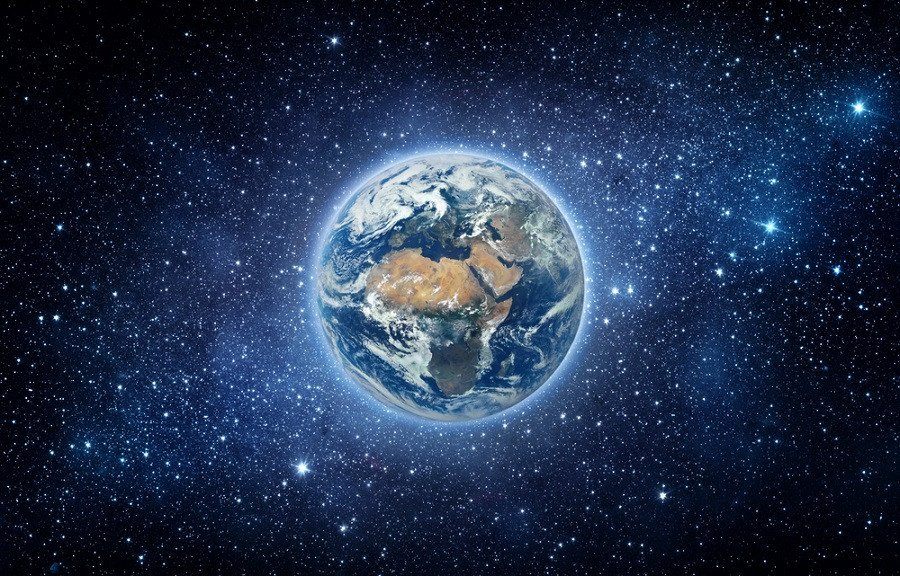

Космос - просто космос!
Космическое пространство, космос — относительно пустые участки Вселенной, которые лежат вне границ атмосфер небесных тел. Космос не является абсолютно пустым пространством: в нём есть, хотя и с очень низкой плотностью, межзвёздное вещество (преимущественно ионы и атомы водорода), космические лучи и электромагнитное излучение, а также гипотетическая тёмная материя.

Чёткой границы космоса не существует, атмосфера разрежается постепенно по мере удаления от земной поверхности, и до сих пор нет единого мнения, что считать фактором начала космоса.